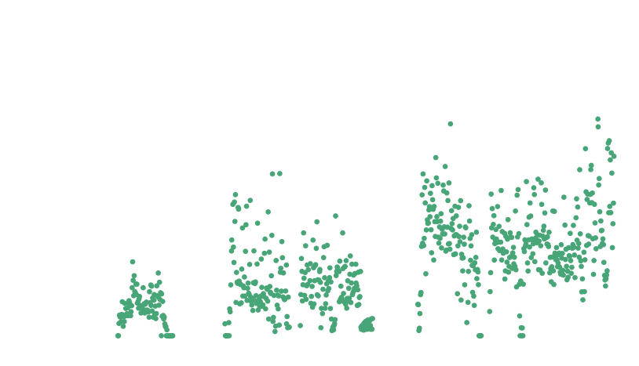
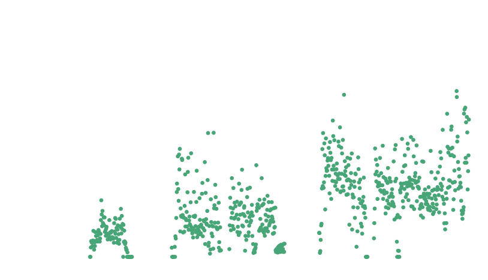

Food Composting and Dining
Every day in the campus of Northeastern University, much food is produced and consumed. However, at the same time, there are much food wasted. Composting is one way to dispose them, which is a process of transforming organic materials, such as fruit and vegetable scraps, into nutrient-rich soil that can be used for gardening and farming. By composting, university can reduce their environmental impact, lower their waste disposal costs, and support local food systems.

 
